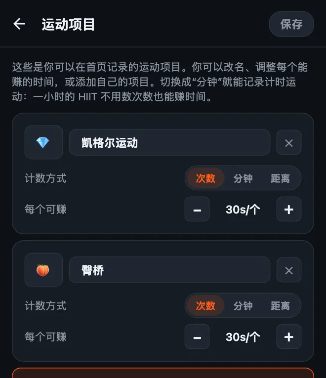
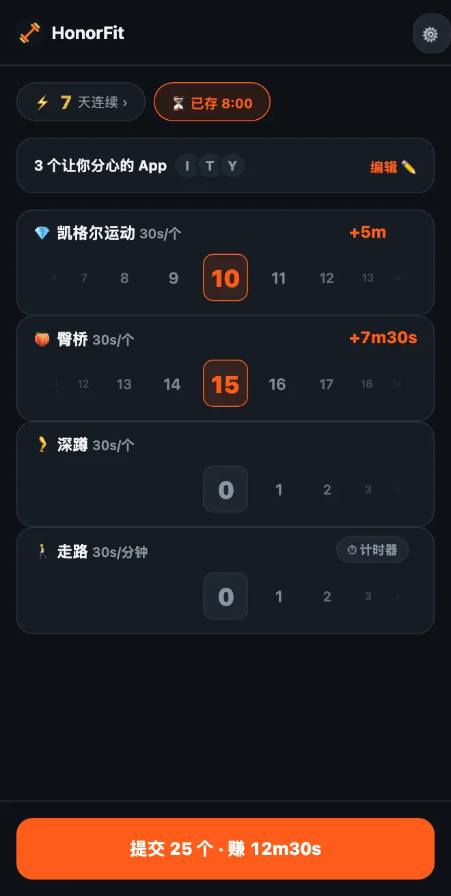

做凯格尔运动来解锁手机
嗨大家好！我做 HonorFit，是因为我想在自己和 Instagram 之间挡上几个俯卧撑，又不想把手机架起来让摄像头帮我数（在加油站这样做，真的不是我人生的高光时刻）。你做完、自己记下来，App 就解锁了。
不过俯卧撑不是每个人都适合。而且最适合这整个概念的运动，其实根本不是俯卧撑，而是凯格尔运动和臀桥。下面说明为什么，还有怎么设置。
为什么凯格尔运动跟诚信制这么搭
凯格尔运动没有人看得到。公车上坐你旁边的人看不到，同事看不到，手机摄像头更不用说。用摄像头数次数的 App，根本没办法数这个。
HonorFit 也不打算数。它用的是诚信制（英文）：你做完，把滚轮转到你做的次数，就好了。所以你可以在开会的时候、在超市排队结账的时候、窝在沙发上的时候赚 TikTok 时间，没有人会知道。
它也解决了大家讲到凯格尔运动都会说的那句：“我知道应该要做，只是一直忘记。”如果你一天会伸手拿手机好几次（没有要批评你，我也是），现在每一次都是提醒。
臀桥虽然不是隐形的，但在地板上甚至床上都很好做，不需要器材，跟凯格尔运动也很搭。
怎么设置
从 1.15.0 版开始，这些都免费：不用 Pro 也能添加最多 3 个自己的运动，而且凯格尔运动和臀桥都是点一下就能加入的建议项目。（Pro 在美国是每月 3 美元或一次买断 19.99 美元，可以无限添加；各国价格和币种不同，商店会显示你当地的价格。）做法如下：
- 在首页点齿轮，再点运动项目卡片。
- 点建议项目里的凯格尔运动，再点臀桥。不用打字，而且它们自带表情符号：凯格尔运动是 💎，臀桥嘛，没错，是 🍑。
- 用 −/+ 按钮设置每个可赚（我的建议在下面）。
- 用 ✕ 删掉你不会用的项目（引体向上之类的？），然后点保存。

编辑界面的完整说明，包括计时运动，在HonorFit 怎么自定义运动项目这篇里。
每一个该赚多少屏幕使用时间？
如果是我，会从这里开始：
| 运动项目 | 每个可赚 | 一组大概可赚 |
|---|---|---|
| 💎 凯格尔运动 | 30 秒 | 10 个 = 5 分钟 |
| 🍑 臀桥 | 30 秒 | 15 个 = 7 分 30 秒 |
| 🚶 走路（计时） | 每分钟 30 秒 | 走 20 分钟 = 10 分钟 |
所以一组 10 个凯格尔运动加 15 个臀桥，大概可以赚 12 分半。再从这里微调。如果时间太容易累积，就把数值调低。如果你发现自己在记没做的次数，代表价格太高了，就把价格降低（把每个的价值调高）。

关于凯格尔运动有一件事：不是越多越好。像 MedlinePlus 和 Cleveland Clinic（都是英文网站）这类健康信息网站，通常说的是一组大约 10 个、一天做几次，也提到做太多可能会让肌肉变得太紧绷。所以拜托不要变成做 100 个凯格尔运动换一小时 YouTube！这也是为什么我会给凯格尔运动一个还不错的每个的数值，让臀桥、深蹲或走路去负责比较大的时间。
基本动作
我是 App 开发者，不是教练也不是物理治疗师，所以这里只是大概的概念。上面的链接有正确的做法说明。
- 凯格尔运动：收紧你憋尿时会用到的肌肉，维持几秒，然后完全放松几秒。这样算一下。记得持续呼吸，尽量不要用到肚子、大腿或屁股的力量。（尿到一半停下来，是用来找到这些肌肉一次的方法，不是平常要练习的。）
- 臀桥：躺平，膝盖弯曲，脚掌踩地。夹紧臀部，把髋部往上抬，直到肩膀到膝盖成一直线，停一下，再慢慢放下来。这样算一下。有些人喜欢在最高点顺便做一下凯格尔运动。
如果你怀孕中、在产后、有骨盆疼痛，或做凯格尔运动会痛，请先问你的医师或骨盆底物理治疗师。他们能告诉你什么适合你的身体，有时候答案会是“现在先不要做凯格尔运动”，这也没关系。你可以改用他们建议的运动来设置 HonorFit。
几个小建议
- 保持三到四个运动项目。像凯格尔运动、臀桥、深蹲和走路这样的组合，坐着、躺着、出门在外都顾得到。每个项目都有自己的滚轮，所以越少越好用。
- 有出门的日子就用计时运动。把运动项目切成分钟（或点走路、瑜伽的建议），散步或上一堂课也能赚时间。
- 保存的组合（Pro，在“设置”里打开）可以存最多 3 组次数组合，例如“10 个凯格尔运动 + 15 个臀桥”，点一下就能应用。
- 屏蔽一两个 App 就好，不要全部屏蔽。就是那个吃掉你整个晚上的。
如果凯格尔运动也不适合你，我也整理了一些低冲击、在办公桌就能做的选择。
HonorFit Blocker 是 iPhone 和 Android 上的免费 App 屏蔽工具。诚信制、不用摄像头，数据都不会离开你的手机。凯格尔运动、臀桥和最多 3 个自定义运动都免费。也许你们有些人会喜欢它！